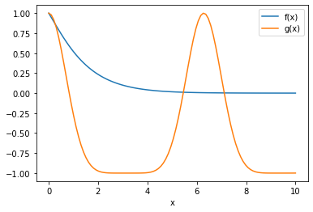
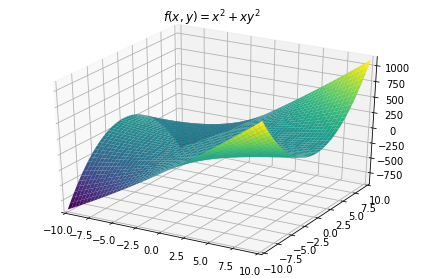

Calculus¶
import sympy as sym
import matplotlib.pyplot as plt
import numpy as np
from scipy.signal import find_peaks
from IPython.display import display,Math
1 Computing limits of a function¶
x = sym.symbols('x')
# the function
fx = x**3
# limit
lim_pnt = 1.5
lim = sym.limit(fx,x,lim_pnt)
display(Math('\\lim_{x\\to %g} %s = %g' %(lim_pnt,sym.latex(fx),lim)))
\[\displaystyle \lim_{x\to 1.5} x^{3} = 3.375\]
# evaluate the function in a range
xx = np.linspace(-5,5,200)
fxx = sym.lambdify(x,fx) # a function for evaluating a sympy function
# show it in a plot
plt.plot(xx,fxx(xx))
# make the plot look a bit nicer
plt.plot(lim_pnt,lim,'ro')
plt.xlim([-5,5])
plt.ylim([-10,10])
plt.xlabel('x')
plt.ylabel('f(x) = $%s$' %sym.latex(fx))
plt.show()
# the function
fx = (x**2)/(x-2)
fxx = sym.lambdify(x,fx) # a function for evaluating a sympy function
xx = np.linspace(1,3,100)
# limit
lim_pnt = 2
lim = sym.limit(fx,x,lim_pnt,dir='+')
display(Math('\\lim_{x\\to %g^+} %s = %g' %(lim_pnt,sym.latex(fx),lim)))
# show it in a plot
plt.plot(xx,fxx(xx))
# make the plot look a bit nicer
plt.plot(lim_pnt,lim,'ro')
plt.xlim([1,3])
plt.xlabel('x')
plt.ylabel('f(x) = $%s$' %sym.latex(fx))
plt.show()
\[\displaystyle \lim_{x\to 2^+} \frac{x^{2}}{x - 2} = inf\]
1.1 Exercise¶
fx = sym.sqrt(x+1)*sym.exp(-x)
gx = sym.cos(x + sym.sin(x))
## start by plotting the functions
fxx = sym.lambdify(x,fx)
gxx = sym.lambdify(x,gx)
xx = np.linspace(0,10,100)
# show it in a plot
plt.plot(xx,fxx(xx),label='f(x)')
plt.plot(xx,gxx(xx),label='g(x)')
# make the plot look a bit nicer
plt.xlabel('x')
plt.legend()
plt.show()

# compute the limits separately at x=5
lim_pnt = 5
lim_fx = sym.limit(fx,x,lim_pnt)
lim_gx = sym.limit(gx,x,lim_pnt)
display(Math('\\frac{\\lim_{x\\to %g} f(x)}{\\lim_{x\\to %g} g(x)} = \\frac{%g}{%g} = %g' \
%(lim_pnt,lim_pnt,lim_fx,lim_gx,lim_fx/lim_gx)))
# now compute limit of fx/gx
lim_fg = sym.limit(fx/gx,x,lim_pnt)
display(Math('\\lim_{x\\to %g} \\frac{f(x)}{g(x)} = %g' %(lim_pnt,lim_fg)))
\[\displaystyle \frac{\lim_{x\to 5} f(x)}{\lim_{x\to 5} g(x)} = \frac{0.0165045}{-0.622015} = -0.026534\]
\[\displaystyle \lim_{x\to 5} \frac{f(x)}{g(x)} = -0.026534\]
2 Piece-wise functions¶
# list function pieces
from sympy.abc import x
piece1 = 0
piece2 = -2*x
piece3 = x**3/10
# put them together with conditions
fx = sym.Piecewise( (piece1,x<0),(piece2,(x>=0) & (x<3)),(piece3,x>=3) )
# evaluate the function in a range
xx = np.linspace(-3,5,1000)
fxx = sym.lambdify(x,fx)
# show it in a plot
plt.plot(xx,fxx(xx),'k')
# make the plot look a bit nicer
plt.xlabel('x')
plt.ylabel('f(x)')
plt.show()
2.1 Exercise¶
# function pieces
x = sym.symbols('x')
f = x**3
g = sym.log(x,2)
fx = sym.Piecewise( (f,x<=0),(g,x>0) )
# print out the function definition
display(Math('f(x) = ' + sym.latex(fx)))
# evaluate the function in a range
xx = np.linspace(-2,2,1000)
fxx = sym.lambdify(x,fx)
# show it in a plot
with plt.xkcd():
plt.plot(xx,fxx(xx),'k')
# make the plot look a bit nicer
plt.xlim([-2,2])
plt.ylim([-10,3])
plt.xlabel('x')
plt.ylabel('y')
plt.show()
\[\begin{split}\displaystyle f(x) = \begin{cases} x^{3} & \text{for}\: x \leq 0 \\\frac{\log{\left(x \right)}}{\log{\left(2 \right)}} & \text{otherwise} \end{cases}\end{split}\]
<string>:2: RuntimeWarning: invalid value encountered in log findfont: Font family ['xkcd', 'xkcd Script', 'Humor Sans', 'Comic Neue', 'Comic Sans MS'] not found. Falling back to DejaVu Sans.
3 Derivatives of polynomials¶
x = sym.symbols('x')
fx = x**2
sym.diff(fx)
\[\displaystyle 2 x\]
# Leibniz notation
display(Math('f(x) = %s, \\quad \\frac{df}{dx} = %s' %(sym.latex(fx),sym.latex(sym.diff(fx)))))
# Lagrange notation
display(Math('f(x) = %s, \\quad f\' = %s' %(sym.latex(fx),sym.latex(sym.diff(fx)))))
# Newton notation
display(Math('f(x) = %s, \\quad \\ddot{f} = %s' %(sym.latex(fx),sym.latex(sym.diff(sym.diff(fx))))))
\[\displaystyle f(x) = x^{2}, \quad \frac{df}{dx} = 2 x\]
\[\displaystyle f(x) = x^{2}, \quad f' = 2 x\]
\[\displaystyle f(x) = x^{2}, \quad \ddot{f} = 2\]
import sympy.plotting.plot as symplot
# plot
fx = (3-x**3)
# generate the first plot
p = symplot(fx,(x,-5,5),show=False)
p[0].label = '$f(x) = %s$' %sym.latex(fx) # create a label for the legend
# extend to show the second plot as well
p.extend( symplot(sym.diff(fx),show=False) )
p[1].label = '$f(x)\' = %s$' %sym.latex(sym.diff(fx))
# some plotting adjustments
p.ylim = [-5,5]
p.xlim = [-3,3]
p[0].line_color = 'r'
p.legend = True # activate the legend
# and show the plot
p.show()
3.1 Exercise¶
f = 3 + 2*x - 5*x**2 + 7*x**4
g = 4*x**2 + x**5
df = sym.diff(f)
dg = sym.diff(g)
d_f_times_g = sym.diff(f*g)
df_times_dg = sym.diff(f) * sym.diff(g)
display(Math('\\text{Without applying the product rule:}'))
display(Math('\\quad (f\\times g)\' = %s' %sym.latex(sym.expand(d_f_times_g))))
display(Math('\\quad f\' \\times g\' = %s' %sym.latex(sym.expand(df_times_dg))))
\[\displaystyle \text{Without applying the product rule:}\]
\[\displaystyle \quad (f\times g)' = 63 x^{8} - 35 x^{6} + 180 x^{5} + 15 x^{4} - 80 x^{3} + 24 x^{2} + 24 x\]
\[\displaystyle \quad f' \times g' = 140 x^{7} - 50 x^{5} + 234 x^{4} - 80 x^{2} + 16 x\]
# apply the product rule
display(Math('\\text{With the product rule: }'))
display(Math('\\quad (f\\times g)\' = %s' %sym.latex(sym.expand(d_f_times_g))))
display(Math('\\quad f\'\\times g+f\\times g\' = %s' %sym.latex(sym.expand(df*g+f*dg))))
\[\displaystyle \text{With the product rule: }\]
\[\displaystyle \quad (f\times g)' = 63 x^{8} - 35 x^{6} + 180 x^{5} + 15 x^{4} - 80 x^{3} + 24 x^{2} + 24 x\]
\[\displaystyle \quad f'\times g+f\times g' = 63 x^{8} - 35 x^{6} + 180 x^{5} + 15 x^{4} - 80 x^{3} + 24 x^{2} + 24 x\]
# try again for addition
dfPlusg = sym.diff(f+g)
display(Math('(f+ g)\' = %s' %sym.latex(sym.expand(dfPlusg))))
display(Math('f\' + g\' = %s' %sym.latex(sym.expand(df+dg))))
\[\displaystyle (f+ g)' = 5 x^{4} + 28 x^{3} - 2 x + 2\]
\[\displaystyle f' + g' = 5 x^{4} + 28 x^{3} - 2 x + 2\]
4 Derivatives of trig functions¶
q = sym.symbols('q')
print(sym.diff( sym.cos(q) ))
print(sym.diff( sym.sin(q) ))
-sin(q)
cos(q)
# show the cyclicity of sin/cos derivatives
f = sym.cos(x)
for i in range(0,8):
display(Math('\\frac{d}{dx}%s = %s' %(sym.latex(f),sym.latex(sym.diff(f)))))
f = sym.diff(f)
\[\displaystyle \frac{d}{dx}\cos{\left(x \right)} = - \sin{\left(x \right)}\]
\[\displaystyle \frac{d}{dx}- \sin{\left(x \right)} = - \cos{\left(x \right)}\]
\[\displaystyle \frac{d}{dx}- \cos{\left(x \right)} = \sin{\left(x \right)}\]
\[\displaystyle \frac{d}{dx}\sin{\left(x \right)} = \cos{\left(x \right)}\]
\[\displaystyle \frac{d}{dx}\cos{\left(x \right)} = - \sin{\left(x \right)}\]
\[\displaystyle \frac{d}{dx}- \sin{\left(x \right)} = - \cos{\left(x \right)}\]
\[\displaystyle \frac{d}{dx}- \cos{\left(x \right)} = \sin{\left(x \right)}\]
\[\displaystyle \frac{d}{dx}\sin{\left(x \right)} = \cos{\left(x \right)}\]
import sympy.plotting.plot as symplot
f = sym.cos(x)
for i in range(0,4):
if i==0:
p = symplot(f,show=False,line_color=(i/5,i/4,i/5),label=sym.latex(f))
else:
p.extend( symplot(f,show=False,line_color=(i/5,i/4,i/5),label=sym.latex(f)) )
f = sym.diff(f)
p.legend = True
p.xlim = [-3,3]
p.show()
4.1 Exercise¶
a = sym.symbols('a')
f = sym.cos(x + sym.sin(x)) + a
colors = 'brkm'
for ai in range(0,4):
if ai==0:
p = symplot(f.subs(a,ai),show=False,label='a=%s' %ai)
else:
p.extend( symplot(f.subs(a,ai),line_color=colors[ai],show=False,label='a=%s' %ai) )
p.title = 'The functions'
p.legend = True
p.show()
for ai in range(0,4):
if ai==0:
p = symplot(sym.diff(f.subs(a,ai)),show=False,label='a=%s' %ai)
else:
p.extend( symplot(sym.diff(f.subs(a,ai)),line_color=colors[ai],show=False,label='a=%s' %ai) )
p.title = 'Their derivatives'
p.legend = True
p.show()
5 Graphing a function tangent line¶
x = sym.symbols('x')
# define function and its derivative
f = x**2
df = sym.diff(f)
# select x point
xa = 1
# define function and derivative values at that point
fa = f.subs(x,xa)
df_a = df.subs(x,xa)
## evaluate function and its derivative
xx = np.linspace(-2,2,200)
f_fun = sym.lambdify(x,f)(xx)
df_fun = sym.lambdify(x,df)(xx)
# compute the tangent line
tanline = df_a * (xx - xa) + fa
# plot it!
plt.plot(xx,f_fun,label='f(x)')
plt.plot(xx,tanline,label='tangent')
plt.plot(xa,fa,'ro')
plt.axis('square')
plt.axis([-3,3,-3,3])
ax = plt.gca()
plt.plot(ax.get_xlim(),[0,0],'k--')
plt.plot([0,0],ax.get_xlim(),'k--')
plt.xlabel('X')
plt.ylabel('f(x)')
plt.legend()
plt.show()
5.1 Exercise¶
# make a function that computes the tangent line, loop through lots of points
def computetangent(f,xa,bnds):
# define function and derivative values at that point
df = sym.diff(f)
fa = f.subs(x,xa)
df_a = df.subs(x,xa)
# evaluate the tangent line
xx = np.linspace(bnds[0],bnds[1],200)
return df_a * (xx - xa) + fa
x = sym.symbols('x')
f = x**2
xx = np.linspace(-2,2,200)
f_fun = sym.lambdify(x,f)(xx)
for i in xx:
yy = computetangent(f,i,xx[[0,-1]])
plt.plot(xx,yy,color=[abs(i)/3,abs(i)/4,abs(i)/2])
# plot it!
plt.plot(xx,f_fun,'k',linewidth=2)
plt.axis('square')
plt.axis([-2,2,-1,3])
plt.axis('off')
plt.show()
6 Finding critical points of a function¶
# The empirical method (useful for df=0; won't work for non-differentiable points)
# create a function
x = np.linspace(-5,5,1000) # vs 1001
fx = x**2 * np.exp(-x**2)
# extrema
localmax = find_peaks(fx)[0]
localmin = find_peaks(-fx)[0]
print('The critical points are ' + str(x[localmax]) + ' ' + str(x[localmin]))
# compute its derivative
dfx = np.diff(fx)/np.mean(np.diff(x)) # scale by dx!
# plot everything
plt.plot(x,fx,label='y')
plt.plot(x[0:-1],dfx,label='dy/dx')
plt.plot(x[localmax],fx[localmax],'ro',label='local max.')
plt.plot(x[localmin],fx[localmin],'gs',label='local min.')
plt.plot(x[[0,-1]],[0,0],'--',c=[.7,.7,.7])
plt.legend()
plt.xlim(x[[0,-1]])
plt.show()
The critical points are [-0.995996 0.995996] [-0.00500501]
# The analytic (symbolic) method
x = sym.symbols('x')
fx = x**2 * sym.exp(-x**2)
# derivative in sympy, solve
dfx = sym.diff(fx,x)
critpoints = sym.solve(dfx)
print('The critical points are: ' + str(critpoints))
# some sympy plotting
p = sym.plot(fx,(x,-5,5),show=False)
p.extend( sym.plot(dfx,(x,-5,5),show=False,line_color='r') )
p[0].label = 'y'
p[1].label = 'dy/dx'
p.legend = True
p.show()
The critical points are: [-1, 0, 1]
6.1 Exercise¶
# what values of 'a' give this function a critical point at x=1 or x=2?
a,x = sym.symbols('a,x')
baseexpr = x**2 * sym.exp(-a*x**2)
arange = np.arange(0,2.25,.25)
xrange = np.linspace(-3,3,100)
# setup plots
fig,ax = plt.subplots(1,2)
for ai in arange:
fx = baseexpr.subs(a,ai)
dfx = sym.diff(fx)
critpnts = sym.solve( dfx )
# also plot the function in subplot1 and its derivative in subplot2
ax[0].plot(xrange,sym.lambdify(x,fx)(xrange))
ax[1].plot(xrange,sym.lambdify(x,dfx)(xrange))
if 1 in critpnts:
display(Math('\\Rightarrow %s\\text{ has a critical point at x=1! Woohoo!!}' %sym.latex(fx)))
elif 2 in critpnts:
display(Math('\\Rightarrow %s\\text{ has a critical point at x=2! Woohoo!!}' %sym.latex(fx)))
else:
display(Math('\\quad %s\\text{ has NO critical point at x=2. :(}' %sym.latex(fx)))
# some adjustments to the function plot
ax[0].set_ylim([0,2])
ax[0].set_title('Function')
ax[0].plot([1,1],[0,2],'--',c='gray')
ax[0].plot([2,2],[0,2],'--',c='gray')
# adjustments to the derivative plot
ax[1].set_ylim([-1.5,1.5])
ax[1].plot(xrange[[0,-1]],[0,0],'--',c='gray')
ax[1].plot([1,1],[-1.5,1.5],'--',c='gray')
ax[1].plot([2,2],[-1.5,1.5],'--',c='gray')
# ax[1].set_xlim([.5,2.5])
ax[1].set_title('Its derivative')
fig.set_size_inches(8,4)
plt.show()
\[\displaystyle \quad x^{2}\text{ has NO critical point at x=2. :(}\]
\[\displaystyle \Rightarrow x^{2} e^{- 0.25 x^{2}}\text{ has a critical point at x=2! Woohoo!!}\]
\[\displaystyle \quad x^{2} e^{- 0.5 x^{2}}\text{ has NO critical point at x=2. :(}\]
\[\displaystyle \quad x^{2} e^{- 0.75 x^{2}}\text{ has NO critical point at x=2. :(}\]
\[\displaystyle \Rightarrow x^{2} e^{- 1.0 x^{2}}\text{ has a critical point at x=1! Woohoo!!}\]
\[\displaystyle \quad x^{2} e^{- 1.25 x^{2}}\text{ has NO critical point at x=2. :(}\]
\[\displaystyle \quad x^{2} e^{- 1.5 x^{2}}\text{ has NO critical point at x=2. :(}\]
\[\displaystyle \quad x^{2} e^{- 1.75 x^{2}}\text{ has NO critical point at x=2. :(}\]
\[\displaystyle \quad x^{2} e^{- 2.0 x^{2}}\text{ has NO critical point at x=2. :(}\]
7 Partial derivatives¶
from sympy.abc import x,y
f = x**2 + x*y**2
display(Math('\\frac{\\partial f}{\\partial x} = %s' %sym.latex(sym.diff(f,x))))
display(Math('\\frac{\\partial f}{\\partial y} = %s' %sym.latex(sym.diff(f,y))))
\[\displaystyle \frac{\partial f}{\partial x} = 2 x + y^{2}\]
\[\displaystyle \frac{\partial f}{\partial y} = 2 x y\]
7.1 Exercise¶
p = sym.plotting.plot3d(f,(x,-3,3),title='$f(x,y)=%s$' %sym.latex(f))
p = sym.plotting.plot3d(sym.diff(f,x),(x,-3,3),(y,-3,3),title='$f_x=%s$' %sym.latex(sym.diff(f,x)))
p = sym.plotting.plot3d(sym.diff(f,y),(x,-3,3),(y,-3,3),title='$f_y=%s$' %sym.latex(sym.diff(f,y)))

8 Indefinite and definite integrals¶
x = sym.symbols('x')
# a simple function
f = x
# indefinite integration
sym.integrate(f) # notice no constant term
\[\displaystyle \frac{x^{2}}{2}\]
# definite integation (within bounds)
sym.integrate(f,(x,0,1))
\[\displaystyle \frac{1}{2}\]
# plotting...
lowbnd = 2 # add later
f = x**3 / (x-lowbnd)
intf = sym.integrate(f)
p = sym.plotting.plot(f,show=False)
p.extend( sym.plotting.plot(intf,(x,-10,0),show=False,line_color='r') )
p.xlim = [-10,10]
p.ylim = [-200,200]
p[0].label = '$f(x)$'
p[1].label = '$\\int f(x)dx$'
p.legend = True
p.show()
display(Math('f(x) = %s' %sym.latex(f)))
display(Math('\\int f(x) dx = %s' %sym.latex(intf)))
\[\displaystyle f(x) = \frac{x^{3}}{x - 2}\]
\[\displaystyle \int f(x) dx = \frac{x^{3}}{3} + x^{2} + 4 x + 8 \log{\left(x - 2 \right)}\]
8.1 Exercise¶
# show that the antiderivative (indefinite integral) of the derivative is the original function
f = 2*x**3 + sym.sin(x)
df = sym.diff(f)
idf = sym.integrate(df)
display(Math('f(x)=%s' %sym.latex(f)))
display(Math('f\'=%s' %sym.latex(df)))
display(Math('\\int (f\')dx=%s' %sym.latex(idf)))
\[\displaystyle f(x)=2 x^{3} + \sin{\left(x \right)}\]
\[\displaystyle f'=6 x^{2} + \cos{\left(x \right)}\]
\[\displaystyle \int (f')dx=2 x^{3} + \sin{\left(x \right)}\]
9 Area between two curves¶
x = sym.symbols('x')
symf = x**2
symg = x
f = sym.lambdify(x,symf)
g = sym.lambdify(x,symg)
xx = np.linspace(-2,2,40)
plt.plot(xx,f(xx))
plt.plot(xx,g(xx),'r')
plt.legend(['$f(x)=%s$'%sym.latex(symf),'$g(x)=%s$'%sym.latex(symg)])
plt.axis([-.25,1.25,-.5,1.5])
plt.show()
from matplotlib.patches import Polygon
xinter = np.linspace(0,1,100)
points = np.vstack((g(xinter),f(xinter))).T
p = Polygon(points,facecolor='k',alpha=.3)
fig, ax = plt.subplots()
ax.add_patch(p)
plt.plot(xx,f(xx))
plt.plot(xx,g(xx),'r')
plt.legend(['$f(x)=%s$'%sym.latex(symf),'$g(x)=%s$'%sym.latex(symg)])
plt.axis([-.25,1.25,-.5,1.5])
plt.show()
9.1 Exercise¶
9.2 Computing the area between two functions¶
The area between two functions is given by the formula \(A = \int_{a}^{b}f(x) - g(x) dx\)
In our example, \(f(x)=x^2\) and \(g(x)=x\)
Therefore, \(A = \int_{a}^{b}(x^2 - x) dx\)
We will compute the area between the two crossing points, that is, where the two functions are equal. This is given by the two solutions to the equation \($x^2=x\)$
The two solutions are \(x=0\) and \(x=1\). This gives us the definite integral of \($A = \int_{0}^{1}(x^2 - x) dx\)$
The final answer will be given in the code below.
# find intersection points
fg_intersect = sym.solve(symf-symg)
display(Math('f(x)\\text{ and }g(x) \\text{ intersect at } x=%s,%s' %(fg_intersect[0],fg_intersect[1])))
# compute area and print results!
A = sym.integrate(symf-symg,(x,fg_intersect[0],fg_intersect[1]))
display(Math('\\text{The area between the functions is } A = %s' %A))
\[\displaystyle f(x)\text{ and }g(x) \text{ intersect at } x=0,1\]
\[\displaystyle \text{The area between the functions is } A = -1/6\]
10 Calculus BUG HUNT!!¶
10.1 evaluate a function in a range¶
from sympy.abc import x
fx = (4*x**3 + 2*x**2 - x) / (-4*x**4 + 2*x**2)
xrange = np.linspace(-2,2,200)
fxx = sym.lambdify(x,fx)
plt.plot(xrange,fxx(xrange))
plt.ylim([-20,20])
plt.xlim(xrange[[0,-1]])
plt.show()
10.2 compute the limit¶
x = sym.symbols('x')
fx = 1/(x+3)
lim_pnt = -3
lim = sym.limit(fx,x,lim_pnt,dir='+')
display(Math('\\lim_{x\\to %g^+} %s = %s' %(lim_pnt,sym.latex(fx),sym.latex(lim))))
p = sym.plotting.plot(fx,show=False)
p.ylim = [-10,10]
p.show()
\[\displaystyle \lim_{x\to -3^+} \frac{1}{x + 3} = \infty\]
10.3 piece-wise function¶
from sympy.abc import x
piece1 = x**2
piece2 = 4*sym.exp(-x**2)
# put them together with conditions
fx = sym.Piecewise( (piece1,x<0) , (piece2,x>=0) )
# evaluate the function in a range
xx = np.linspace(-2,2,1000)
fxx = sym.lambdify(x,fx)
# show it in a plot
plt.plot(xx,fxx(xx),'k')
plt.show()
10.4 show the first and second derivatives of sin(x)¶
x = np.linspace(-2*np.pi,2*np.pi,200)
dt = np.diff(x[0:2])
y = np.sin(x)
dy = np.diff(y)
ddy = np.diff(y,2)
plt.plot(x,y,label='y')
plt.plot(x[0:-1],dy/dt,'--',label='dy',alpha=.6)
plt.plot(x[0:-2],ddy/dt**2,':',label='d$^2$y',alpha=.3)
plt.legend(framealpha=1)
plt.show()
10.5 Compute critical points using sympy¶
x = sym.symbols('x')
fx = x**2 * sym.exp(-x**2)
# derivative in sympy, solve
dfx = sym.diff(fx,x)
critpoints = sym.solve(dfx)
print('The critical points are: ' + str(critpoints))
# plot the function derivative and its critical points
y = sym.lambdify(x,dfx)
xx = np.linspace(-3,3,200)
plt.plot(xx,y(xx))
plt.plot([-3,3],[0,0],'k--')
plt.xlim([-3,3])
for i in critpoints:
plt.plot(i,0,'ro')
plt.title('Function derivative')
plt.show()
The critical points are: [-1, 0, 1]
10.6 Compute the area between two curves¶
(not the same thing as Between Two Ferns)
from matplotlib.patches import Polygon
x = sym.symbols('x')
f1sym = sym.cos(x)
f2sym = x
xx = np.linspace(0, np.pi/3, 100)
f1 = np.cos(xx)
f2 = xx
fintersect = np.argmin(abs(f1-f2))
# compute area
A = sym.integrate(f1sym-f2sym, (x, xx[0], xx[fintersect]))
traceX = np.concatenate((xx[0:fintersect], xx[fintersect:0:-1]))
traceY = np.concatenate((f1[0:fintersect], f2[fintersect:0:-1]))
points = np.vstack((traceX, traceY)).T
p = Polygon(points, facecolor='k', alpha=.3)
fig, ax = plt.subplots()
ax.add_patch(p)
plt.plot(xx, f1, xx, f2)
plt.title('The shaded area is %s' % A)
plt.show()